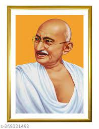
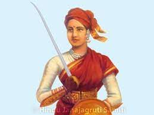

Mahatma Gandhi
The father of the nation who was also given the title ‘Mahatma' gave the world a perspective which supported humanity and not tyranny. His non violent measures which seemed ineffective in the tense scenario proved to be a method which not only brought the British Raj under pressure but also gathered worldwide support for India. His efforts to abolish untouchability, remove poverty and Swaraj (self-rule) guided India towards a state of unity and tolerance. With the non-cooperation movement, Salt Satyagraha and Quit India Movement, he used peaceful resistance as his "weapons" in the struggle against the British Raj.
Rani Lakshmibai
Rani Lakshmibai commonly known as ‘Jhansi ki Rani' was an iconic figure in the first freedom struggle of India in 1857. After the East India Company, under the leadership of Lord Dalhousie decided to apply the Doctrine of Lapse to acquire Jhansi, the queen took the responsibility of leading her army to oppose the British oppression. She became a symbol of courage, women empowerment and patriotism. She died at the hands of the British but her sacrifices did not go waste as it set the tone for many future leaders.
Lal Bal Pal

The trio of Lala Lajpat Rai, Bal Gangadhar Tilak and Bipin Chandra Pal advocated the Swadeshi movement which spread the message of self-reliance. Their efforts included boycotting foreign goods, strikes and protesting the partition of Bengal to unite the people with the ultimate motive of overthrowing the British Raj. Lala Lajpat Rai who led a number of demonstrations against the British succumbed to injuries after being ‘Lathi charged' in his protest against the Simon Commission.
Bhagat Singh

Bhagat Singh is considered to be one of the most influential extremists in the freedom struggle of India and an iconic figure amongst the Indian youth even today.
Subhash Chandra Bose

Considered to be one of the greatest brains behind India's freedom struggle Subhash Chandra Bose or Netaji as he was affectionately called was a key figure in India's freedom struggle. He formed the Indian National Army with the involvement of Indians in other parts of Asia to attack the British forces in India. He sought alliances around the world with countries such as USSR, Japan and Germany to strengthen his force against the British Raj in India. His famous motto "Give me blood and I will give you freedom", truly defined the spirit of Subhash Chandra Bose.